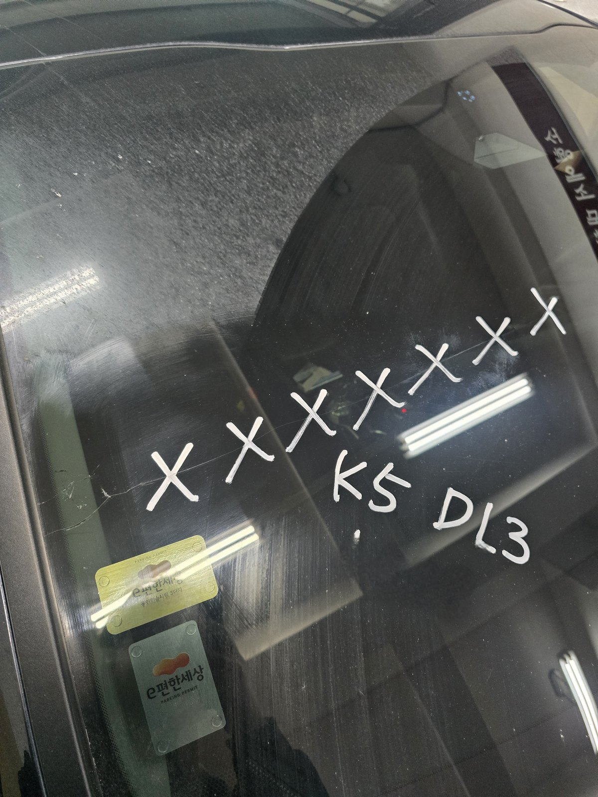
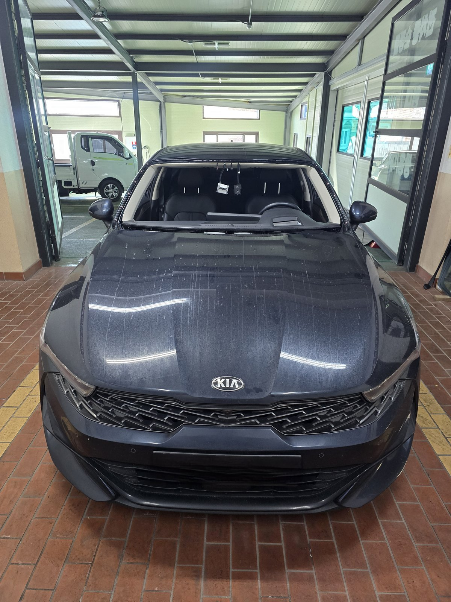
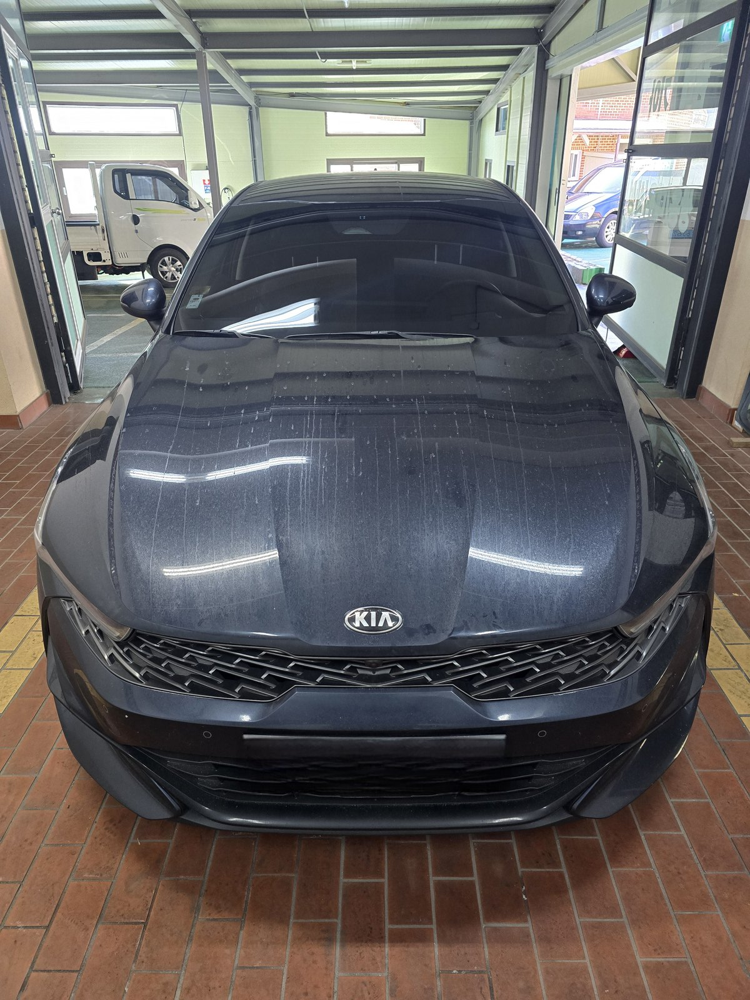
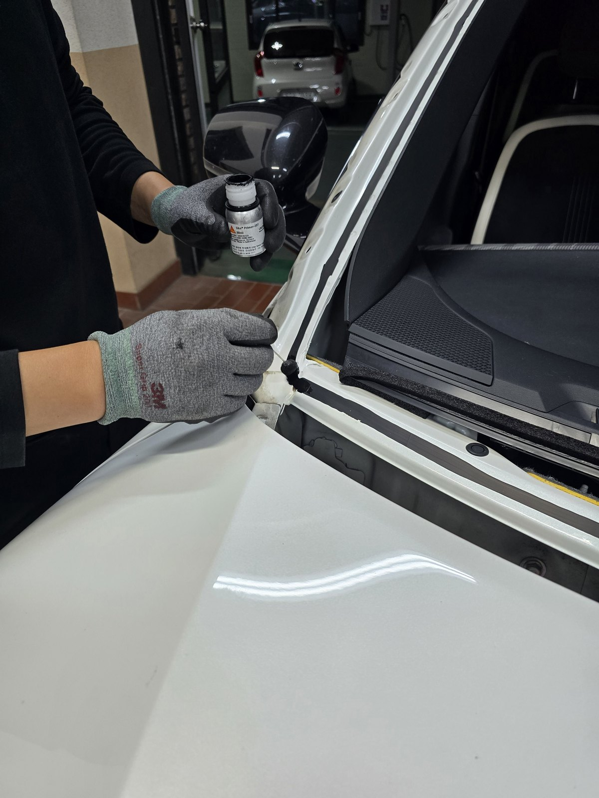

지난달에 앞유리 갈았는데요. 처음이라 아무것도 모르고 여기저기 전화만 스무통은 돌린 것 같네요.

사진1 — 깨진유리 K5앞유리 · 탭→전체화면→스크린샷저처럼 헤매시는 분 있을까봐, 제가 알아보면서 물어봤던 것들 정리해둡니다. 저도 사장님한테 들은 거라 전문가는 아니니 참고만 하세요.
일단 제일 헛걸음했던 게, 카센터부터 전화한 거였어요. 카센터는 유리를 직접 안 만진다고 하더라고요. 맡겨도 결국 유리전문점으로 외주가 넘어간다고 합니다. 그 외주비는 결국 소비자가 내는 거고요. 그럴거면 처음부터 전문점 가는게 맞죠.
그리고 아래는 제가 자동차유리전문점에서 물어봤던것인데, QnA식으로 정리해봅니다.
Q. 얼마나 걸리나요?
이게 업체에 유리 재고가 있냐 없냐에 따라 다르다고 합니다. 재고가 없으면 2주에서 두 달까지도 걸릴 수 있고, 있으면 1시간 안에 끝날 수도 있다고 해요. 저는 마침 있어서 그날 바로 받았습니다. 전화하실 때 이것부터 물어보세요.

사진2 — 작업장 K5입고 비포 · 탭→전체화면→스크린샷
사진3 — 작업장 K5입고 애프터 · 탭→전체화면→스크린샷Q. 비용은 얼마나 하나요?
이건 차종이랑 유리 종류(열선, 센서 유무)에 따라 편차가 커서 제 금액이 참고가 안 되실 거예요. 전화로 차종 말하고 견적부터 받아보세요. 생각보다 보험처리가 되서 부담이 덜합니다.

사진4 — 실리콘도포 프라이머도포 작업 · 탭→전체화면→스크린샷Q. 보험처리 되나요?
자차보험으로 처리했습니다. 접수부터 알아서 도와주셔서 저는 딱히 한 게 없었어요. 다만 할증 여부는 보험사마다 다르니 본인 보험사에 먼저 물어보시는 게 맞습니다.
그리고 아래에는 참고하실 분 계실 거 같아서 번호 남겨봐요. 당일 급하게 처리해야 하는 분, 유리 없다고 며칠씩 기다리라는 말 들으신 분 도움되셨으면 합니다.
제일자동차유리 당일 1시간교체 0507-1451-6262